Published: 2023-02-20
Source link: https://www.cnphotos.net/academy/show-117.html
Many friends ask me,
How do you photograph flowers against a dark background?
Why is my background never dark enough?
Read this carefully.
This article explains it fully.
If you master these moves,
your other subjects will gain character too.
Why does everyone like a black background?
Photography is about subtraction
Photography is the art of subtraction. In front of a uniform background, you remove every extra element except the subject. Simple is beautiful. Even a very ordinary leaf can be beautiful in a quiet way.
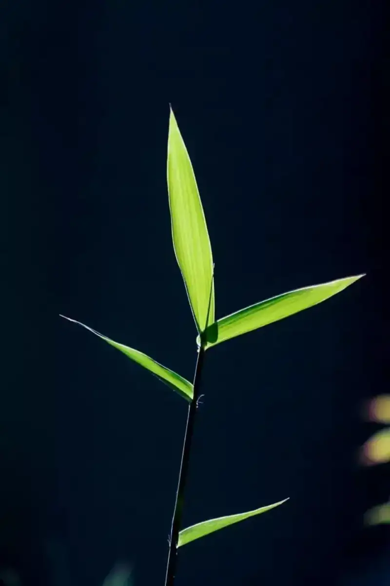
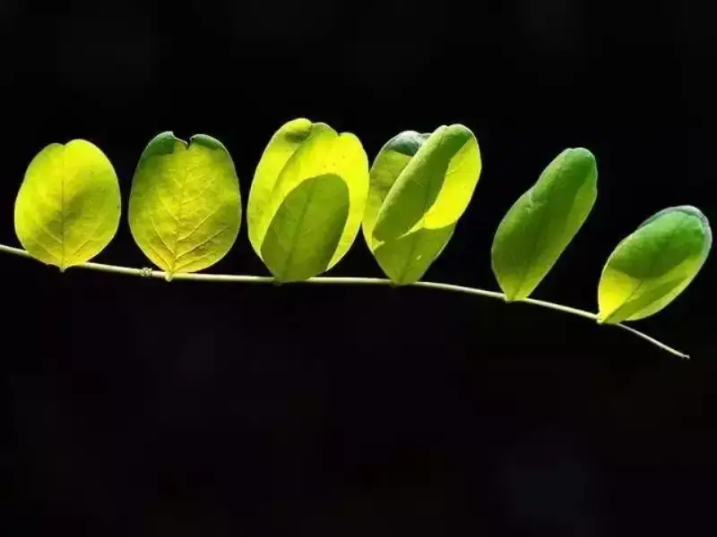
Give the image more texture
A black background brings out the veins and texture of stems, leaves, and petals. The strong color contrast also shows fine detail. Once an ordinary subject is shot against a single background, the texture of the image improves a lot.
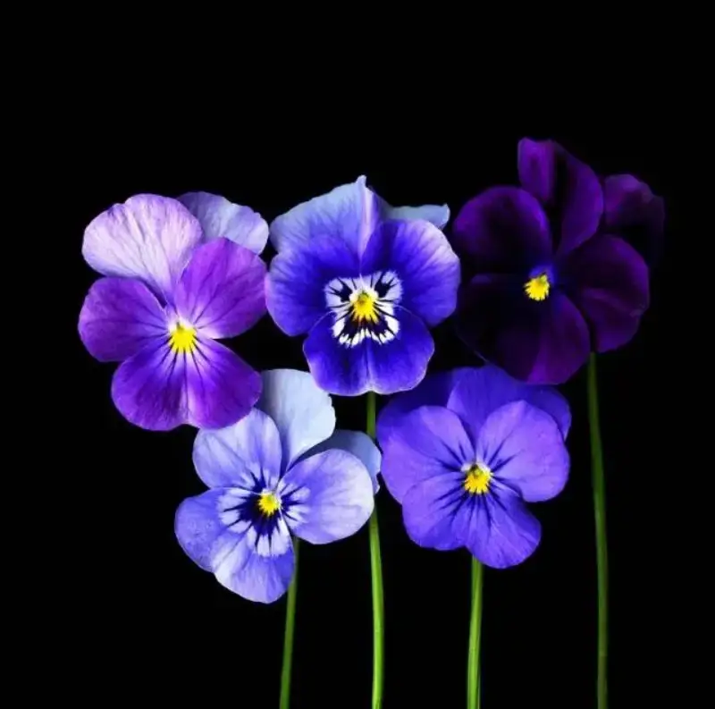
A full test of photographic skill
A black background looks simple, but first you judge the setting, then you meter the light, and finally you consider the background and the idea. It is not as easy as just pressing the shutter.
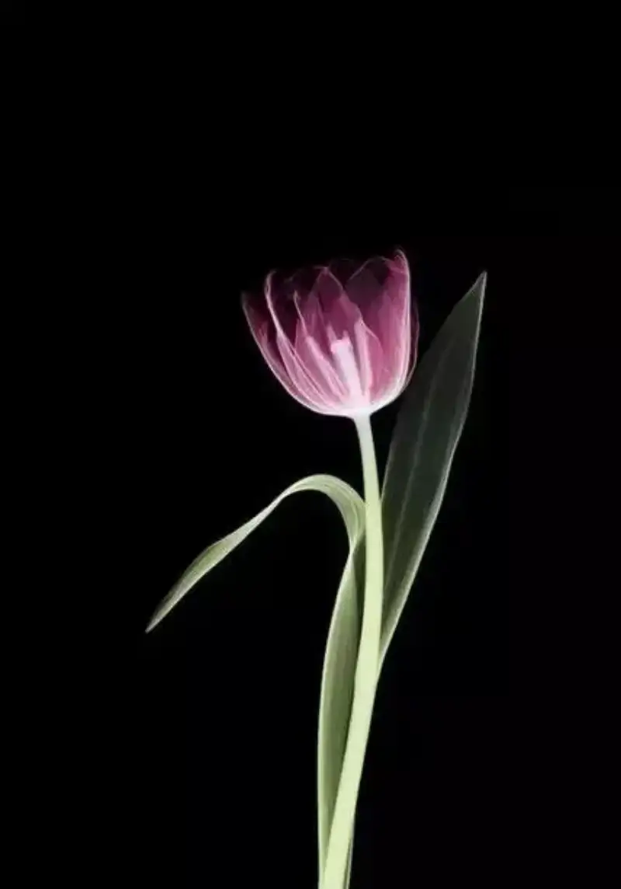
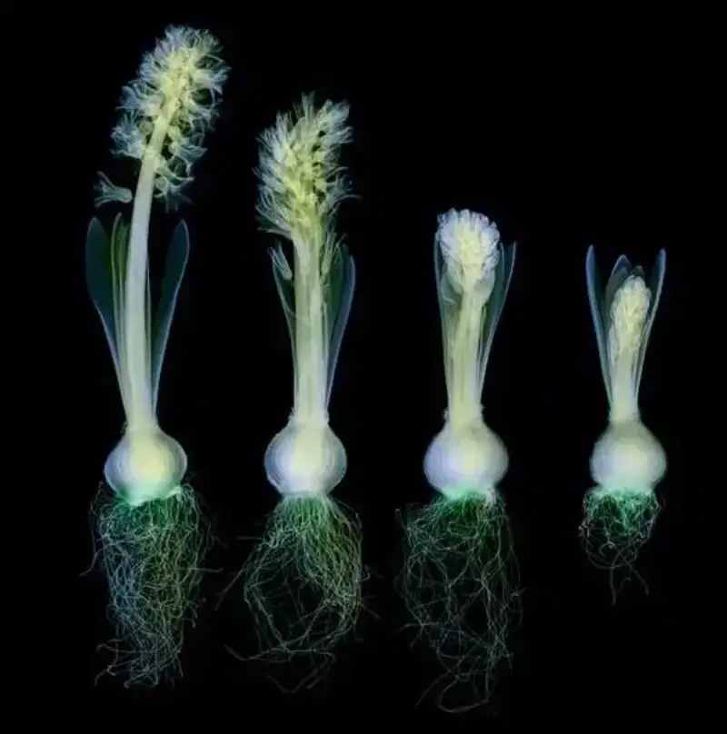
▲ A flower photographed against a dark background using X-ray light.
Once you shoot black-background photos well, you can shoot not only flowers, but still life and people too. Dark-background artistic portraits are also very popular now.
So which skills do you need to shoot an attractive flower photo against a dark background?
How to photograph flowers against a dark background?
1. Choose a dark background
A black-background flower photo does not need a pure black background. Just choose a deep, dark tone as much as you can. Flowers are usually light in color, so try many angles when you shoot. You will easily find a dark background that contrasts with the flower.
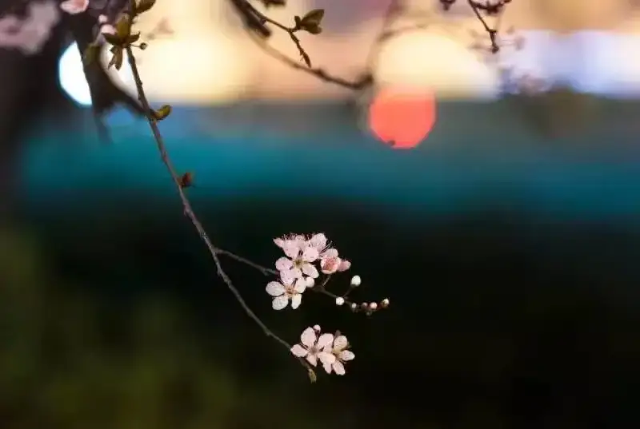
If you have a tilting screen, it is easier to find the angle.
2. Use spot metering
Once you pick a dark background, use spot metering. Meter on the brightest part of the subject. The goal is simple. Spot metering widens the light ratio, so the bright part is exposed correctly. Areas darker than the metered spot turn black on their own. This is the same idea as shooting a silhouette.
When the light contrast is strong, this trick easily turns the background black.
Result with evaluative metering ▼
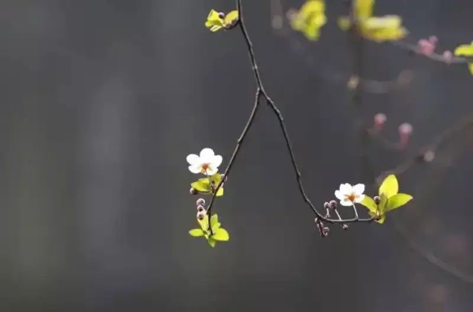
Result with spot metering. Note the metered spot is on the brightest area ▼
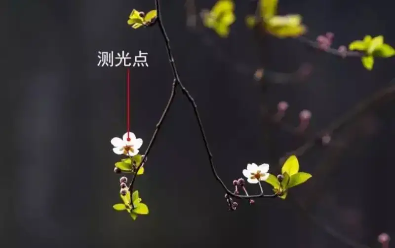
3. Lower the exposure compensation
With the first two steps, you can get a dark background in many scenes. If the image still looks a bit gray, lower the exposure a little. When you set exposure compensation, look at how much of the frame is dark. The larger the dark area, the more you lower the compensation.
For the same flower above, in aperture priority or shutter priority mode, lower the exposure by -1 to -2 EV. The background will then turn almost black.
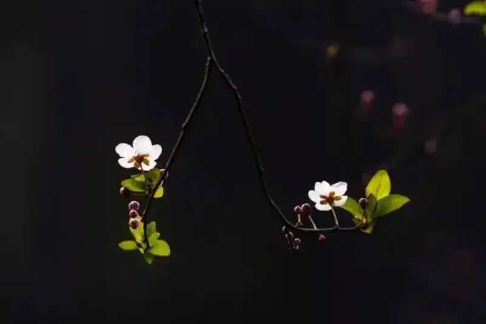
4. Use backlight to your advantage
In front light, if the background is bright in color, it is hard to get a black background. But in backlight, even if the background is not dark, the strong light ratio makes the effect easy to get.
In front light ▼
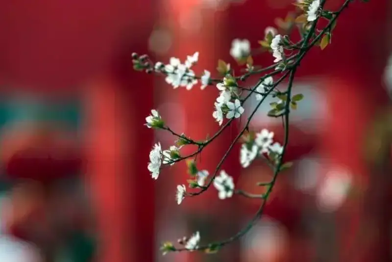
In side-backlight, a small angle change gives a darker background. If you shoot straight into the backlight, make sure the light source sits above or below the camera.
In side-backlight ▼
5. Use a flash
The big benefit of a flash is this: it lifts the foreground and darkens the background. Even if the background is not dark, you get a black background. Note this: with a flash, the farther the background is from the subject, the better. If you have no external flash, the built-in flash works too.
Result without a flash ▼
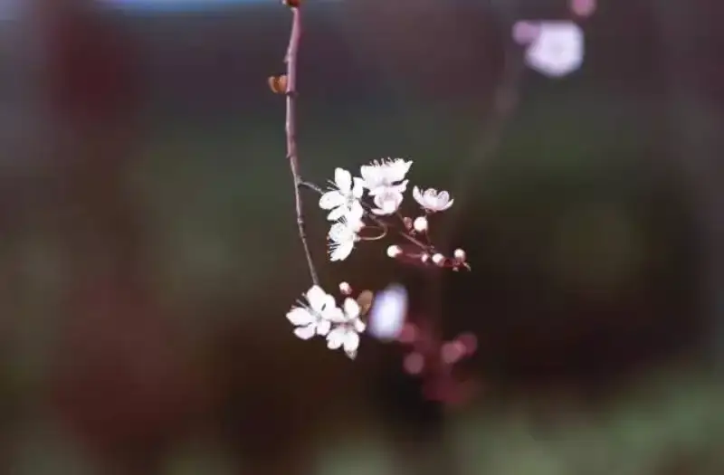
Result with a flash ▼
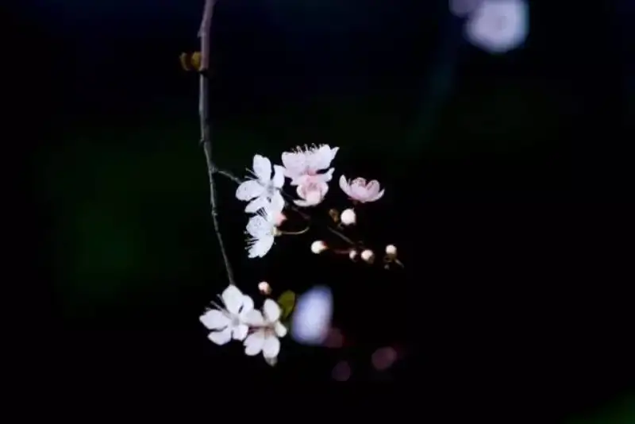
6. Use a dark prop
When conditions are poor, or you do not want the hassle, use a black or dark prop, such as a background cloth, an umbrella, or clothing. Place it some distance behind the flower and shoot.
When you use this method, shoot with a macro or telephoto lens. Keep the prop out of the frame so it does not show. The tips above still apply.
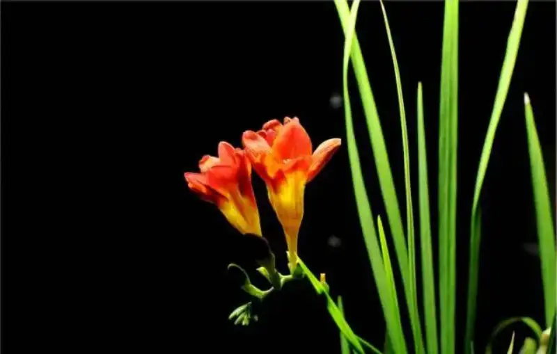
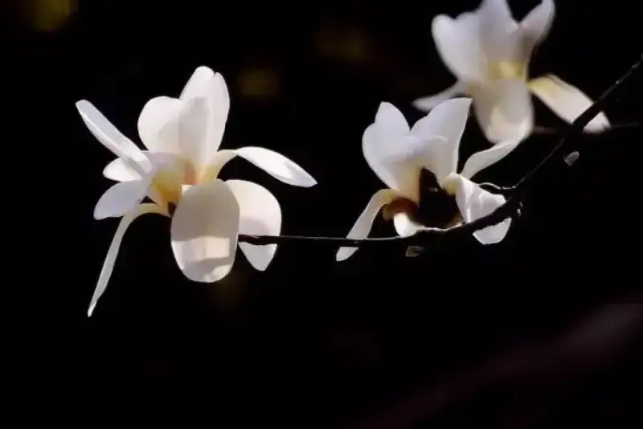
Spring is the season for photographing flowers, so go out and practice more.For a fully black background, the subject must be simple. How you frame the flower and choose the branches is the key.